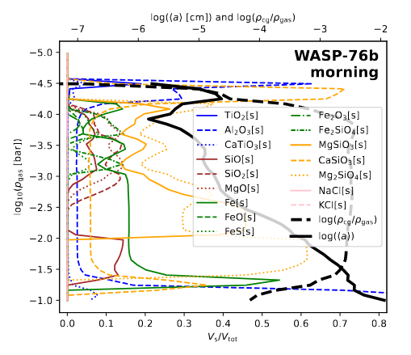
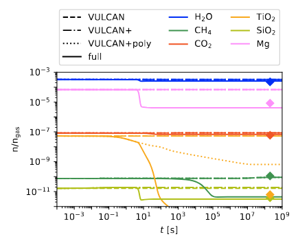

Research
One day I will walk among the stars
gazing into the unknown
knowing I belong
for I am not a traveler
just stardust returning home
From rocky planets to massive gas giants, exoplanets exhibit an extraordinary diversity of atmospheric environments. In many cases, their conditions cannot be reproduced on Earth, making these distant worlds unique extraterrestrial laboratories for testing and expanding our understanding of atmospheric processes. My research focuses on modeling how clouds, climate, and chemical processes shape these alien worlds.



Clouds have been at the center of my research so far. Using models of varying complexity, I am able to constrain the cloud structures of exoplanets based on observations. To truly understand how clouds shape a planet, we must study their interactions with both the gas phase and the climate. I therefore combine kinetic chemistry models with microphysical cloud formation to investigate the details of these interactions. To model the impact of clouds on the climate of exoplanets, I use the Global Circulation Model MITgcm. Originally developed for Earth, this model is now widely used across different fields to study planetary climates. By coupling MITgcm with cloud formation and kinetic chemistry models, I can explore how clouds influence atmospheric dynamics. Once a model is established, it must be compared with observations by generating synthetic spectra. To do this, I study the complex optical properties of mixed cloud particles. Ultimately, I aim to understand the full complexity of exoplanet atmospheres and through them, the diversity of these alien worlds.
First author publications
The unprecedented accuracy of JWST has led to the detection of silicate clouds in exoplanet atmospheres, allowing for the first time to probe cloud formation in extreme environments. While parametrized cloud descriptions can fit these observations, the results do not fully agree with microphysical models. To bridge this gap, we developed Nimbus, a fast microphysical cloud model that can constrain cloud formation processes from observations and utilize Virga, an equilibrium condensation model balancing gravitational settling and diffusion. Using both models, we investigate WASP-107 b, WASP-17 b, VHS-1256 b, and YSES-1 c to determine their cloud structure and constrain cloud formation processes. Our results show that all four planets have cluster-sized silicate particles (r ~ 1 nm) at high altitudes. Within Nimbus and Virga, these particles can only be explained by highly inefficient cloud particle settling (fsed < 0.1) or by inefficient growth rates due to low sticking coefficients (s < 0.0001). Our results also show that the sticking coefficient is directly linked to the vertical extent of clouds and can therefore be constrained using the broad shape of the spectral energy distribution. The sticking coefficients found for VHS-1256 b and YSES-1 c are in agreement with expectations from laboratory experiments under Earth-like conditions (0.01 < s < 0.3). Panchromatic observations were crucial to achieve these constraints. Future cloud studies should therefore aim to combine observational data from 1 micron to 10 micron whenever possible.
Warm Saturn type exoplanets orbiting M-dwarfs are particularly suitable for in-depth cloud characterisation through transmission spectroscopy due to their favourable stellar to planetary radius contrast. However, modelling cloud formation consistently within the 3D atmosphere remains computationally challenging. The aim is to explore the combined atmospheric and micro-physical cloud structure, and the kinetic gas-phase chemistry for the warm Saturn HATS0-6b orbiting an M-dwarf. A combined 3D cloudy atmosphere model is constructed by iteratively executing the 3D General Circulation Model (GCM) expeRT/MITgcm and a kinetic cloud formation model, each in its full complexity. Resulting cloud particle number densities, sizes, and compositions are used to derive the local cloud opacity which is then utilised in the next GCM iteration. The disequilibrium H/C/O/N gas-phase chemistry is calculated for each iteration to assess the resulting transmission spectrum in post-processing. The cloud opacity feedback causes a temperature inversion at the sub-stellar point and at the evening terminator at gas pressures higher than 0.01 bar. Furthermore, clouds cool the atmosphere between 0.01 bar and 10 bar, and narrow the equatorial wind jet. The transmission spectrum shows muted gas-phase absorption and a cloud particle silicate feature at approximately 10 micron. The combined atmosphere-cloud model retains the full physical complexity of each component and therefore enables a detailed physical interpretation with JWST NIRSpec and MIRI LRS observational accuracy. The model shows that warm Saturn type exoplanets around M-dwarfs are ideal candidates to search for limb asymmetries in clouds and chemistry, identify cloud particle composition by observing their spectral features, and identify the cloud-induced strong thermal inversion that arises on these planets specifically.

The possibility of observing spectral features in exoplanet atmospheres with space missions like the JWST and ARIEL necessitates the accurate modelling of cloud particle opacities. In exoplanet atmospheres, cloud particles can be made from multiple materials and be considerably chemically heterogeneous. Therefore, assumptions on the morphology of cloud particles are required to calculate their opacities. The aim of this work is to analyse how different approaches to calculate the opacities of heterogeneous cloud particles affect cloud particle optical properties and how this may effect the interpretation of data observed by JWST and future missions. We calculate cloud particle optical properties using seven different mixing treatments: four effective medium theories (EMTs: Bruggeman, Landau-Lifshitz-Looyenga (LLL), Maxwell-Garnett, and Linear), core-shell, and two homogeneous cloud particle approximations. We conduct a parameter study using two-component materials to study the mixing behaviour of 21 commonly considered cloud particle materials for exoplanets. To analyse the impact on observations, we study the transmission spectra of HATS-6b, WASP-39b, WASP-76b, and WASP-107b. Materials with large refractive indices, like iron-bearing species or carbon, can change the optical properties of cloud particles when they comprise less than 1\% of the total particle volume. The mixing treatment of heterogeneous cloud particles also has an observable effect on transmission spectroscopy. Assuming core-shell or homogeneous cloud particles results in less muting of molecular features and retains the cloud spectral features of the individual cloud particle materials. The predicted transit depth for core-shell and homogeneous cloud particle materials are similar for all planets used in this work. If EMTs are used, cloud spectral features are broader and cloud spectral features of the individual cloud particle materials are not retained. Using LLL leads to less molecular features in transmission spectra compared to Bruggeman.

Recent observations suggest the presence of clouds in exoplanet atmospheres but have also shown
that certain chemical species in the upper atmosphere might not be in chemical equilibrium.
Present and future interpretation of data from, for example, CHEOPS, JWST, PLATO and Ariel requires
a combined understanding of the gas-phase and the cloud chemistry. The goal of this work is to
calculate the two main cloud formation processes, nucleation and bulk growth, consistently from a
non-equilibrium gas-phase. The aim is further to explore the interaction between a kinetic gas-phase
and cloud micro-physics. The cloud formation is modelled using the moment method and kinetic nucleation
which are coupled to a gas-phase kinetic rate network. Specifically, the formation of cloud condensation
nuclei is derived from cluster rates that include the thermochemical data of (TiO2)N from N = 1 to 15.
The surface growth of 9 bulk Al/Fe/Mg/O/Si/S/Ti binding materials considers the respective gas-phase
species through condensation and surface reactions as derived from kinetic disequilibrium. The effect
of completeness of rate networks and the time evolution of the cloud particle formation is studied
for an example exoplanet HD 209458 b. A consistent, fully time-dependent cloud formation model in
chemical disequilibrium with respect to nucleation, bulk growth and the gas-phase is presented and
first test cases are studied. This model shows that cloud formation in exoplanet atmospheres is a
fast process. This confirms previous findings that the formation of cloud particles is a local
process. Tests on selected locations within the atmosphere of the gas-giant HD 209458 b show that
the cloud particle number density and volume reach constant values within 1s. The complex kinetic
polymer nucleation of TiO2 confirms results from classical nucleation models. The surface
reactions of SiO[s] and SiO2[s] can create a catalytic cycle that dissociates H2 to 2 H, resulting
in a reduction of the CH$_4$ number densities.
Nucleation is considered to be the first step in dust and cloud formation in the atmospheres of asymptotic giant branch
(AGB) stars, exoplanets, and brown dwarfs. In these environments dust and cloud particles grow to macroscopic sizes when
gas phase species condense onto cloud condensation nuclei (CCNs). Understanding the formation processes of CCNs and dust
in AGB stars is important because the species that formed in their outflows enrich the interstellar medium. Although widely
used, the validity of chemical and thermal equilibrium conditions is debatable in some of these highly dynamical astrophysical
environments. We aim to derive a kinetic nucleation model that includes the effects of thermal non-equilibrium by adopting different
temperatures for nucleating species, and to quantify the impact of thermal non-equilibrium on kinetic nucleation. Forward and backward
rate coefficients are derived as part of a collisional kinetic nucleation theory ansatz. The endothermic backward rates are
derived from the law of mass action in thermal non-equilibrium. We consider elastic collisions as thermal equilibrium drivers.
For homogeneous TiO2 nucleation and a gas temperature of 1250 K, we find that differences in the kinetic cluster temperatures
as small as 20 K increase the formation of larger TiO2 clusters by over an order of magnitude. An increase in cluster temperature
of around 20 K at gas temperatures of 1000 K can reduce the formation of a larger TiO2 cluster by over an order of magnitude. Our
results confirm and quantify the prediction of previous thermal non-equilibrium studies. Small thermal non-equilibria can cause a
significant change in the synthesis of larger clusters. Therefore, it is important to use kinetic nucleation models that include thermal
non-equilibrium to describe the formation of clusters in environments where even small thermal non-equilibria can be present.

We combine angular differential imaging (ADI) with spectral differential imaging (SDI) to investigate 3 different imaging techniques for spectral direct imaging: ASDI, SADI and CODI.
Using SPHERE/IFS observations we test the techniques on Beta Pictoris b, 51 Eridani b and HR 8799 e.
Our results show that combining SDI with ADI in general can help and that CODI achieves overall the best results. You can also read more about it in a well written blog post by David Gooding.

Co-author publications
To interpret the new limb asymmetry observations of JWST, a detailed understanding of how the relevant processes affect morning and evening spectra grounded in forward models is needed. Focusing on WASP-39b, we compare simulations from five different general circulation models (GCMs), including one simulating disequilibrium thermochemistry and one with cloud radiative feedback, to the recent WASP-39b limb asymmetry observations. We also post-process the temperature structures of all simulations with a 2D photochemical model and one simulation with a cloud microphysics model. Although the temperatures predicted by the different models vary considerably, the models are remarkably consistent in their predicted morning–evening temperature differences.
WASP-39b observations suggest iron-free clouds with less abundant cloud condensation nuclei than previously expected. The ensemble study shows that clouds increase transit limb differences due to asymmetries in cloud coverage and by enhancing horizontal differences in the gas temperatures. For hot planets, evening-to-morning differences of up to 150 ppm are suggested in the optical and 100 ppm in the infrared (2-8 micron). For ultra-hot Jupiters, evening-to-morning transit differences are dominated by the morning cloud for a cloud-free evening limb: They are strongly negative in the PLATO band (0.5-1~ micron, -500 ppm), moderately negative in the near-infrared (1-1.5 micron, -200 ppm) and moderately positive (+100 ppm) for less than 2 micron. For a partly cloudy evening terminator, the evening-to-morning transit asymmetry is moderately positive in the whole wavelength range. Warm Jupiter planets exhibit negligible transit asymmetries. PLATO and JWST transit asymmetry observations between 1-2 micron are optimal to characterize cloudy planetary atmospheres around K-A stars. JWST observations are most effective for M star planets with transit differences > 500 ppm for 8-10 micron.
In Virga-v1, we have retained all the original functionality of eddysed and updated several components including the optical constants data, Mie calculations , available condensate species, saturation vapor pressure curves and formalism for fall speeds calculations. Here we benchmark Virga by reproducing key results in the literature, including the SiO2 cloud detection in WASP-17 b and the brown dwarf Diamondback-Sonora model series
Stellar activity is one of the major limits for transit spectroscopy. In this paper, we show how asymmetries in stellar activity can produce similar signals to limb asymmetries in the planets atmosphere. These differences might also occur in the absence of star spots, making them hard to quantify. Considering asymmetries in stellar activity is therefore important to prevent false positives.
With JWST, we are now able to observe not only the entire transit of exoplanets in unprecedented detail, but also each terminator individually. In this paper, the limb asymmetries in WASP-39b are investigated by comparing JWST NIRSpec/PRISM with various forward models, including cloud-free, hazy, and cloudy models.
For this work, I coupled detailed cloud formation models with petitRADTRANS to generate the transmission spectra of the condensate cloud model. The techniques used in this paper were also later used to study the effects of different cloud particle morphologies on observations.

In this paper, the potential detection of a nonmonotonic radial rotation profile in a low-mass lower giant star is reported. For most low- and intermediate-mass stars, the rotation on the main sequence seems to be close to rigid. KIC 9267654 however, seems to show a surface rotation rate that is faster than its bulk envelope rotation rate.
While doing service observation with HERMES at the Mercator telescope, observers can use 10% of the telescope time for their own observation. During one of my runs, I used my time to observe KIC 9267654.

We implemented full radiative transfer into MITgcm, creating expert/MITgcm. With it, we analysed
the temperature structure, wind structure and the dynamical heat transport of the two Hot Jupiters
HD 209458b and WASP-43b. We found that the deep layers of the two planets differ and further
observations of WASP-43b could help to explore dynamical processes in the deep atmosphere.
To analyse the impact of clouds on 3D exoplanets, implementing cloud formation into the MITgcm
is one of my core tasks for my PhD. This paper does not yet include cloud modeling, but it provides
the basis for future implementation.
Refereed non-astrophysics publications
As part of the Exploring Exoplanets exhibition, we developed an educational role playing game, tackling realistic challenges for the first habitat of humanity. In this table top role playing game, up to 20 players can solve 5 different problems that the habitat faces. It was a great pleasure developing this module, and it was well recieved during the exhibition.
Conferences, Workshops, & Seminars
I was invited to give a talk at the UTSA/Department of Physics and Astronomy Spring 2026 Physics Graduate Seminar. My presentation covered the basics of cloud formation and how we use current telescopes to gain insights into exoplanet atmospheres.
The TAPS meeting brings together planetary scientists, engineers, and astronomers to present about all things planets. Interdisciplinary meetings are always tricky as many jargon barrier exist. TAPS was handling this challenges with excellence, making it one of the most interesting conferences I attended. I myself presented my work on the characterization of cloud physics from exoplanet observations.
The BashFest brings together early-career researchers at the cutting edge of astronomy and astrophysics, to promote the exchange of research ideas and visions for the future of astronomy. The symposium focuses on invited review talks, and includes discussions and contributed posters from postdocs and students. I had the pleasure to be part of the LOC for the 10th installment of BashFest and coordinated the SOC.
ExoClimes is the perfect conference for an exoplanet cloud modeler like myself covering all topics from planetary climates, atmospheric chemistry, clouds, hazes, planetary interiors, and atmospheric loss. It attracts everyone who either studies clouds, or is annoyed by them because they show up in their observations. I presented my work on heterogeneous cloud particles and why it is important to not neglect them.
The European Astrobiology Network Association (EANA) covers all aspects needed to study the emergence and existence of life in our universe. The EANA Conference is thus a colorful meeting of biologists, geologists, physicists, and many more. This Interdisciplinary crowd makes the EANA Conference one of the most interesting I have been to so far. This year I contributed my research on how cloud particles can cause a disequilibrium gas-phase. While this research was conducted for hot Juptiers it is still highlights the importance of considering the detailed interactions between clouds and the gas-phase chemistry.

This conference covers all aspects that causes the emergence of life on an exoplanet atmospheres. Talks range from exoplanet climate modeling, protoplanetary disks, chemistry in different worlds, and the future of life and humanity. I presented our results on the atmospheric modeling of HATS-6b which showed the importance of clouds and stellar irradiation on the atmospheric structure of warm Saturns.

The fifth installment of the Exoplanet conference series is bigger than all its predecessors. With over 800 participants even the big theater hall of the Stadsgehoorzaal felt crowded at times. The five days were packed with talks, posters, and a surprise hippopotamus. I was lucky enough to have my Poster on the Monday when people were still fresh. I had many interesting science discussion and was fascinated by the diverse research that is conducted to better understand exoplanets.

I presented my work on the 3D cloudy climate of HATS-6b. This presentation coverd iterative cloud-climate model approach that we developed, the impact of stellar activity on the methane abbundance, and the observational implications.
This ISSI team meeting is focused around the intercomparison of the chemical kinetics implementation of multiple GCMs.
The Graz-Vienna exoplanet scientist meeting is a bi-annual meeting between the exoplanet researchers of the University of Vienna and the IWF in Graz. The goal of the meeting is to strenghten the research connections within Austria. I presented our work on disequilbrium cloud formation and explaiend how we describe clouds in a microphysical way. It was amazing to see how my topic fitted well within all the others presented and I hope that some fruitfull collabroations will arise from this meeting!
The general assembly of the European Geosience Union (EGU) includes many different topics. From sessions on atmospheric science to geodynamics all the way to planetary sciences. This huge assembly of scientists from many different fields is a great opportunity to interchange knowledge between scientific fields. Even though it might be hard at times to follow the jargon, it is very worthwhile to learn how other scientists deal with similar problems. I presented in the session "Gas Giant System Exploration in the Solar System and Beyond". In my PICO presentation, I gave a quick overview over cloud fromation in exoplanet atmospheres followed by more indepth discussions in the discussion session afterwards.

Cloud modelers make up a small, but important, sub group within the exoplanet community. For Cloud Academy, many of the big and small names assemble in Les Houches for a week of all things clouds. From observations to theory, from exoplanets to brown dwarfs, many different topics were represented. With around 60 attendees, Cloud Academy was small enough to allow for in depth discussions with many different scientists, leading to fruitfull idiations and hopefully future collaborations. Druing the week in Les Houchs, I presented my work on the effect of thermal non-equilibrium on kinetic nucleation. Even though nucleation is only a small part of the cloud formation process, it fitted in well with other presentations on small but important details of cloud formation. If you missed my presentation or something was unclear, fell free to go back to my slides!

In the third instalment of the CHAMELEON school, we strengthend the collaboration wihtin our network by setting
up joint projects. Some of us worked on JWST proposel for cycle 2, others worked on paper drafts. For this school,
Helena Lecoq Molinos, Nanna Bach-MØller, Flavia Amido, Aaron Schneider, Jayatee Kanwar and myself combined
forces to study exoplanet atmospheres. With our combined expertise, we are able to model the temperature, wind, and
chemistry structure of a cloudy exoplanet. In the end we hope to determine what we can learn from a cloudy exoplanet
and what will be forever hidden behind the clouds.
At the end of the school, we held an inperson MEME (Massive Exoplanet Meme Exposition)
for the CHAMELEON students and IWF employee to enjoy.
The summer school "From Stardust to Extra-Solar Planets: Dynamics of Exoplanetary and Solar System Bodies"
included a broad range of lectures on celestial dynamics, asteroid impacts, planet formation, proto-planetary
discs and exoplanet atmosphere's. Everyday, 4 lectures were held allowing to cover this broad range of
topics in detail. In the afternoon, the students could present their work, connecting their work to the
lecturers as well as the other students.
On evenings and weekends, the school went beyond the purely scientific content. We could enjoy the outreach
lecture "Rock around the Moon", take part in a panel discussion on science communication and bond with the
other participants on excursions to castles, hikes and on whisky tours. Meeting so many engaged and talented
scientists from all around the world was an amazing experience and helped to set my own research into the
bigger picture. I was especially astonished by how much other fields were applicable to my research such
as the wind treatment in discs, evolution of late stage planets or the tidal deformation of solar system bodies.

Exoplanet 4 is an international conference about all things exoplanet. It covers fields from planet
formation to atmospheric characteristics and from models to observations. This conference was an
amazing opportunity to connect one's own research to the broader field of exoplanet science. The
conference featured various talks, poster presentations and splinter sessions.
I presented a poster on "Kinetic Nucleation in Thermal Non-Equilibrium", in which I explained the basic ideas behind kinetic nucleation, how it connects to exoplanet science and
the effects of thermal non-equilibrium. The corresponding paper is currently in preparation.

The colloquium "Gravitational waves and exoplanets" was a one day event in Brussels. It
included talks by Gabriela Gonzalez and Jo van den Brand about gravitational waves and by Michel
Mayor and Lisa Kaltenegger about exoplanet discovery and habitability. During the event, a poster
session was held in which Belgian universities presented their work.
I presented a poster on "Kinetic Nucleation in Thermal Non-Equilibrium". In this poster,
I explained the basic ideas behind kinetic nucleation, how it connects to exoplanet science and
the effects of thermal non-equilibrium. The corresponding paper is currently in preparation.

The second CHAMELEON school was all about the big picture. We started the week by splitting into groups
and discussing what picture items we would like to see explored in the near and far future. During the
rest of the week, we were tasked to investigate a specific instrument which could be used to answer one
of these questions. Our project was titled "Planets IN Extra-galactic Areas Providing Population Levels:
an Enormous Survey" - or PINEAPPLE for short. At the end of the week we presented our proposition in front
of a jury. We managed to convince them that exploring the population of extra-galactic planets is an important
science question and that PINEAPPLE would be a way to answer it.
On the practical side, the workshop featured a range of talks and a hands-on session. We learned about
"The Real World of Space Missions" from Peter Roelfsema, about "The Path to Habitable Worlds"
from Aki Roberge, about HabEx and LIFE from Pieter de Visser and about METIS from Bernhard Brandl. In the
hands-on session we learned how to use Pandexo and CASA. Additionally, we enjoyed a resilience training by Karen
Huizing.
CHAMELEON schools are training opportunities for early stage researchers within the CHAMELEON network. Using
the diversity of skills and knowledge within the network, the schools teach key elements from different fields.
In the first CHAMELEON school,
we had hands-on sessions on archival data, machine learning, ARCiS, ProDiMp and GGchem. Furthermore,
we learned about "Deep Learning and Kernel Machines" from Johan Suykens and about "How to keep women
(and men) in science" from Petra Rudolf. We also learned about 3D modelling, cloud formation, physical
structures and chemical structures.
Research Projects
Cloud formation in 3D exoplanet atmospheres

During my PhD I tackled the detailed interaction of clouds with their enviroments. Starting with a general introduction to exoplanets, my thesis details how the chemistry, cloud formation, and climate of exoplanets can be predicted. From there, the effect of thermal and chemical non-equilibria on cloud formation is studied as well as the optical properties of mixed cloud particles. Lastly, the climate of HATS-6b is studied in great detail to learn how clouds affect the climate of warm Saturns. The most important takeaway from this work: clouds matter and will shape the atmosphere of exoplanets. I hope you enjoy following my research by reading my PhD thesis, by revisiting my public defense slides, or by watching me present my work.
Spectral characterization of companions around Young Suns (Master Thesis)

Even though direct imaging detection only gave us a handful of planets, they are crucial to study exoplanet characteristics. For my Master Thesis, I collaborated with the Leiden Observatory which hosted me for half a year. The aim was to utilise the spectral information available within SPHERE/IFS observation to improve the quality of direct imaging. To this end, we tested and implemented 4 different spectral differential imaging (SDI) techniques into PynPoint. Furthermore, we looked into ways to distinguish background stars from exoplanets. The results of this work have been published.
Implementation and Improvement of an MCP anode (Semester Project)

Measuring fundamental particles is no easy task. Previous to this work, an MCP anode had been designed to detect the number and position of positrons. In this project, we tested the and in 3 different set ups. These tests showed a critical design flaw in the anode. The currents within the anode after a positron impact can damage the thin carbon layer of the anode. To prepare future improvements of the anode, we performed simulations to calculate the maximum currents that can occur within the anode. The simulations also showed that it is difficult to balance precise position determination and robustness to strong currents.
To Measure a Transit with a 0.5m Telescope (Semester Project)

Every astronomer living in a big city knows the frustration of starless skies. In this project, we aimed to determine whether an exoplanetary transit can be measured in the middle of Zurich with the 0.5m Telescope at Hoengerberg. Collaborating with Adrian Gheorghe, we developed Python routines to accurately measure the brightness of stars. During a period of 6 months, we conducted 6 observation of stars with known Hot Jupiter transits. In the end, we were able to extract two reasonable transit light curves. One of these was later used in a follow up study to confirm the exoplanetary transit.
Contribution to Open Source Software
Nimbus

I developed Nimbus to connect observations of clouds to our understanding of the microphysical processes involved in cloud formation. It builds on the approximations made by Virga to accelerate computation times, allowing to explore a larger parameter space. Nimbus is currently improved to account for more detailed nucleation and the connection of clouds to the gas-phase. The model is fully open-source and contributions are welcommed
Virga
The cloud model Virga calculates the physical transport of cloud material under the single assumption of a given settling efficiency. It is therefore physically informed and fast, making it the perfect tool to retrieve cloud properties from observations or to include clouds into other computationally intensive models. Currently, I am working on integrating heterogeneous cloud particles into Virga to asses cloud structures in exoplanets.
GCMtoolKit

Aaron Schneider, Robin Bayens, and I started developing GCMtoolKit to simplify working with global circulation model (GCM) data. This library should allow to easily perform data handling, data manipulation, and plotting of GCM output. Starting from MITgcm, the goal is to support multiple GCMs, making the library a universal tool for the GCM community.
PynPoint
During my Master's Thesis I developed Spectral differential imaging techniques for PynPoint to improve the reduction of SPHERE/IFS data. All developed techniques are available in the newest version of PynPoint and a detailed description of the new techniques can be found in my Master Thesis as well as the resulting paper. Feel free to explore all new reduction techniques and get in touch if you have any questions!